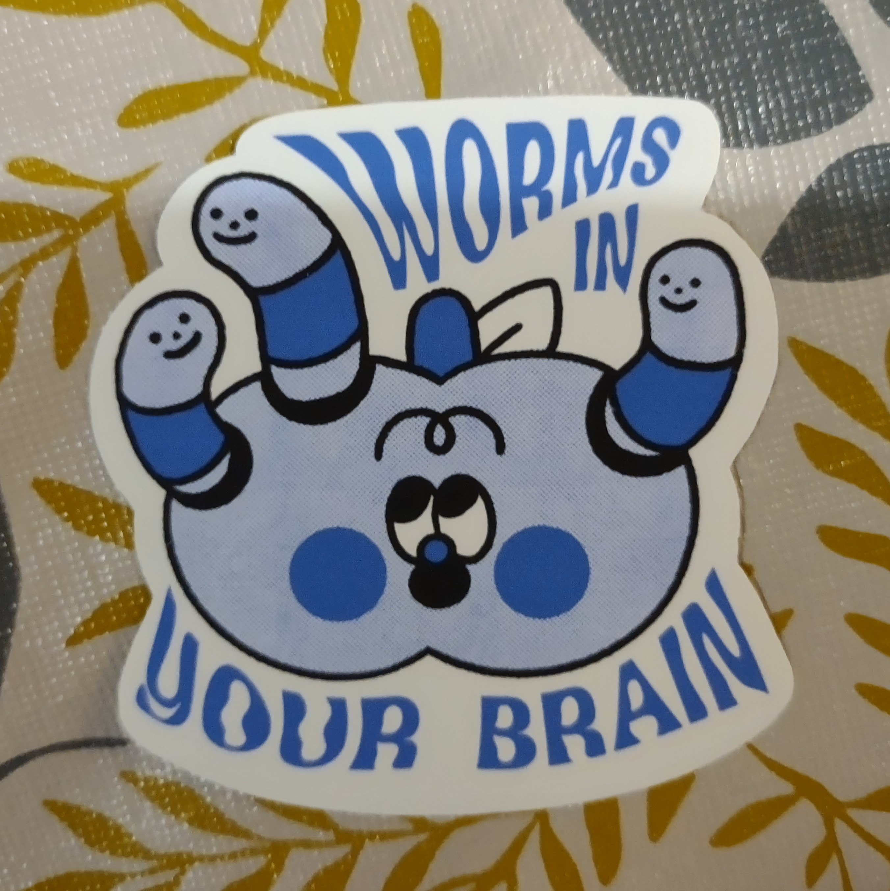

I'm a programmer and designer at heart.
When I'm not coding, I journal, read, write, make art, game, and take walks around my
neighbourhood.
One of the things I enjoy doing is collecting and using all sorts of stationary.
You can see a selection of some of the vinyl stickers I have in my collection below!
A Selection of Stickers
